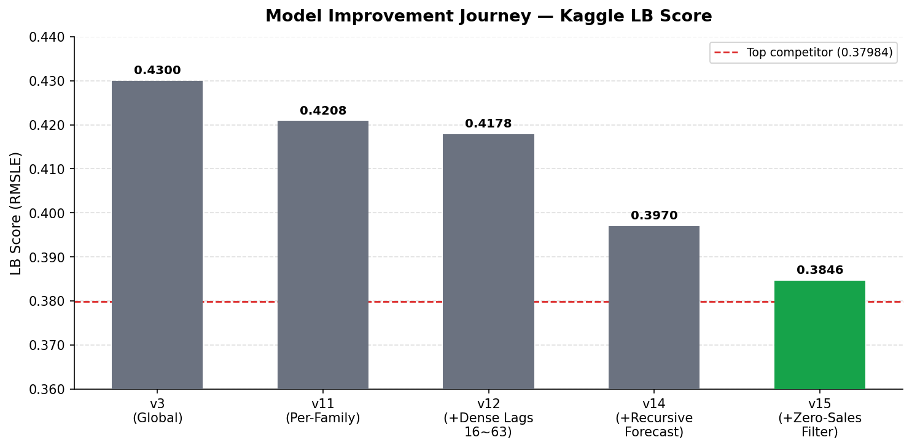
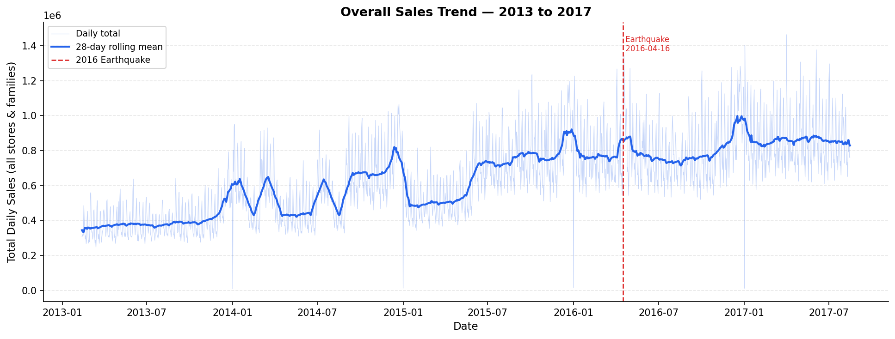
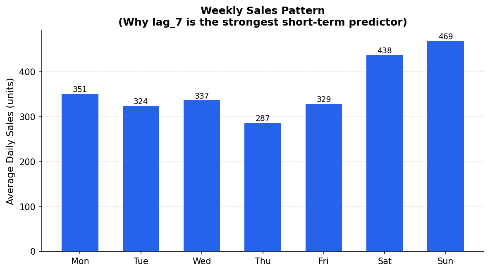
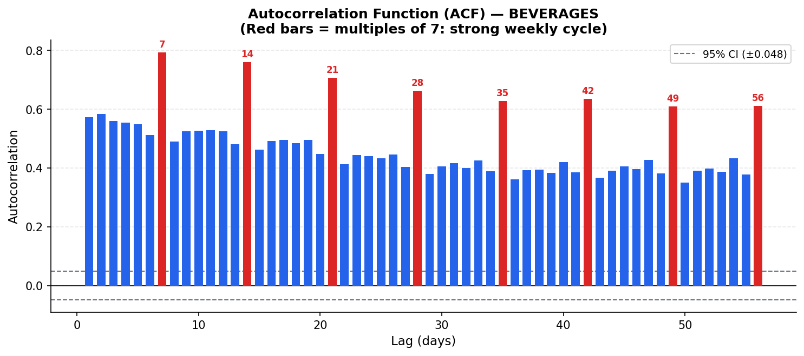
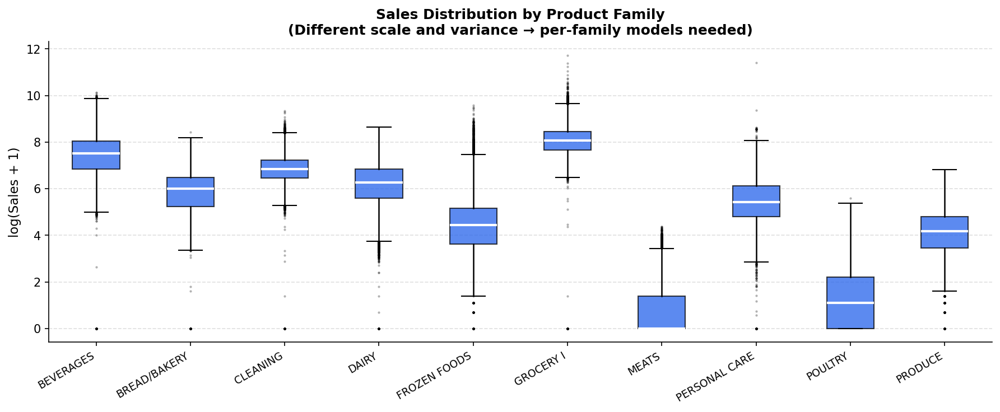
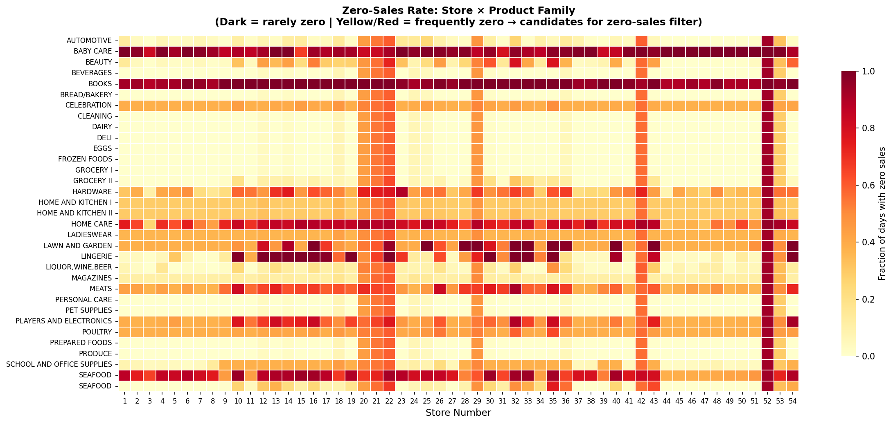

"LB 0.38465 — 11% below baseline, driven by recursive forecasting and zero-sales detection."
This project tackles Kaggle Store Sales - Time Series Forecasting: predict daily sales for every store–product pair in Corporación Favorita's 54-store Ecuadorian grocery chain. The challenge involves 1,782 concurrent time series and a strict 16-day horizon.
The final pipeline trains 33 independent LightGBM models (one per product family) with recursive day-ahead forecasting — each model predicts tomorrow using its own prior predictions as lag features, unlocking lag_7, the strongest weekly cycle signal.
Ecuador's largest grocery chain, 54 stores across 22 cities. Training data spans 4.5 years. Auxiliary sources include daily oil prices, national/regional/local holiday calendars matched by store geography, daily transaction counts, and forward-looking promotion flags.
Lag_1–63, lag_364/371, rolling means/stds, calendar, holiday by locale, oil price MAs, promotion lags, earthquake dummy.
One LightGBM per product family. PRODUCE, BEVERAGES, MEATS have different scales and seasonality — separate models outperform one global model.
Predict Aug 16, feed it as lag_1 to predict Aug 17, repeat. Unlocks lag_7 — the dominant weekly cycle. Single biggest gain: LB 0.418 → 0.397.
Store–family pairs with 3+ consecutive zero-sales days → prediction forced to 0. Eliminates positive bias from discontinued SKUs. LB 0.397 → 0.385.






Hover to inspect — orange = historical · gold dashed = forecast (Aug 16–31)
Kaggle public leaderboard · 16-day forecast horizon · lower RMSLE is better